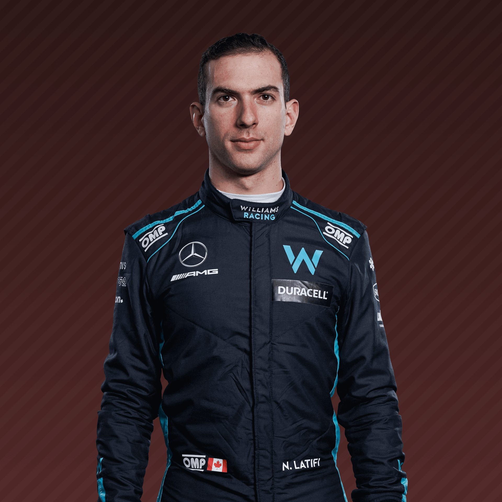

Top Pilotes
Notre TOP 3 des pilotes du week-end !
Lewis Hamilton
Charles Leclerc

Max Verstappen
Flop Pilotes
Notre FLOP 3 des pilotes du week-end !

Alex Albon

Fernando Alonso

Pour ne rien manquer des dernières nouvelles du monde de la F1
La F1 a officialisé l'arrivée d'une troisième course sur le sol américain dès l'an prochain. Le Grand Prix aura lieu en prime time dans les rues de la capitale du jeu, Las Vegas.
En savoir plus...L'ancien patron de la Fédération internationale automobile (FIA) Max Mosley a mis fin à ses jours avec une arme à feu en mai 2021, en raison d'un cancer diagnostiqué en 2010.
En savoir plus...La période de Virtual Safety Car a coûté cher, et peut-être la victoire à Charles Leclerc dimanche dernier lors du Grand Prix d'Arabie Saoudite.
Voici pourquoi.
Notre TOP 3 des pilotes du week-end !
Notre FLOP 3 des pilotes du week-end !
Toutes les actus qu'il ne fallait pas manquer cette semaine !
L’équipe Alpine F1 Team a dévoilé l’A522, sa nouvelle monoplace pour 2022, ce lundi 21 février à l’occasion d’une présentation à Paris. Le lancement de l’A522 était diffusé en direct dès 18h30 (heure de Paris), mais la monoplace, pilotée cette saison par le Français Esteban Ocon et le double champion du monde Fernando Alonso ne fut dévoilée que vers 19h00 devant une foule massée au siège de l'écurie.
27 ans déjà que l’icône s’en est allé.
En cette année 1994, Ayrton Senna, au volant de sa Williams-Renault s’élance au départ avec la ferme intention de briller durant ce Grand-Prix et, surtout, d’inscrire ces premiers points au championnat pilote. Pour les deux premières courses de la saison 94, il avait signé là aussi la pole position, mais avait dû essuyer deux abandons consécutifs
La campagne 2022 avait mal débuté pour Red Bull avec un double abandon sur problème mécanique au Grand Prix de Bahreïn, mais l’écurie de Milton Keynes a su rapidement réagir le week-end dernier en décrochant la pole position le samedi avec la monoplace de Sergio Perez et la victoire le dimanche avec celle de Max Verstappen dans les rues de Djeddah en Arabie Saoudite.
Alain Prost et Jean Alesi nous racontent leurs plus beaux souvenirs en Formule 1.
Le pilote qui m’a le plus impressionné en piste c'est Senna, il n’y a pas de doutes. Il utilisait les pneus de qualifications à la perfection et c’était extrêmement compliqué de le battre. Moi c’était l’opposé, je n’y arrivais pas très bien. En course, je ne peux pas dire qu’il y en a un qui m’a impressionné à ce niveau-là. Niki Lauda m’a quand même impressionné plusieurs fois en course par sa résilience. Il était là alors que je ne m’y attendais pas. Donc en course pas trop mais en qualifs oui, où il y avait l’attraction de force de Senna.
Mon plus beau souvenir c'est probablement ma première course avec Ferrari. C'est juste mythique quand tu es un gamin de 25 ans et que tu enfiles la combinaisaon de la Scuderria. La voiture était très très impressionnante. Une vraie merveille, très très fine, avec un museau travaillé et un aérodynamisme comme j'ai rarement connu. Vous savez, la F1 c'est la F1, et la F1 c'est Ferrari. Les pilotes de cette année sont bons mais je suis certain qu'Hugo Perrot sera bien meilleur l'an prochain en pilotant aux côtés de Charles.
Le documentaire annuel de Canal + est d'ores et déjà disponible sur YouTube
Une envie d'en savoir plus sur l'actualité de la Formule 1 ?
Abonnez-vous vite à notre newsletter pour ne rien manquer !